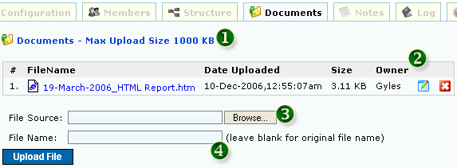

<table class="no-border" cellpadding=3 cellspacing=3>
<tr><td>
	<H1>1. Edit Task</H1>
	<pre align="left">     
	<strong>Figure 1: Edit Task</strong></pre>
	<ol>
		<li><strong>1. MARK TASK AS MILESTONE</strong></li>
		<li><strong>2. TASK NAME</strong></li>
		<li><strong>3. TASK CODE</strong></li>
		<li><strong>4. GENERATE TASK CODE:</strong> Task Code will be generated automatically</li>
		<li><strong>5. START AND END DATE</strong></li>
		<li><strong>6. TASK DURATION:</strong> Days from Start Date and End Date</li>
		<li><strong>7. PROGRESS PERCENTAGE:</strong> Calculated via average percentage from Tasks in project</li>
		<li><strong>8. TASK DESCRIPTION</strong></li>
		<li><strong>9. TASK PHASES SELECTION</strong></li>
		<li><strong>10. TASK STATUS:</strong> Open or Closed</li>
		<li><strong>11. TASK BILLING:</strong> Billable or Non-Billable Options in Timesheet</li>
		<li><strong>12. ACTUAL HOURS AS CALCULATED FROM TIMESHEET</strong></li>
		<li><strong>13. ALLOW OR DENY TIMESHEET ENTRY FOR THIS TASK</strong></li>
		<li><strong>14. CHECK TO PROPAGATE OPEN STATUS TO ALL SUBTASKS</strong></li>
		<li><strong>15. CLICK TO ADD NEW SUBTASK</strong></li>
	</ol>
	<H1>2. Task Members</H1>
	Select the "Members" tab to access Task Members page
	<pre align="left">     
	<strong>Figure 2: Task Members</strong></pre>
	<ol>
		<li><strong>1. CURRENT TASK MEMBERS:</strong> Members with '*' cannot be removed as they have timesheet hours already charged to task. Members removed from task
		members will be automatically removed in SubTasks as well. Members added will NOT be automatically added in SubTasks</li>
		<li><strong>2. PROPAGATE MEMBERS TO SUBTASKS AS WELL:</strong> Members added in tasks can be automatically added to SubTasks by checking this box</li>
		<li><strong>3. ALLOW / DENY CURRENT TEAM FROM ACCESSING TASK</strong></li>
		<li><strong>4. PROPAGATE ALLOW / DENY CURRENT TEAM PERMISSION TO SUBTASKS AS WELL</strong></li>
		<li><strong>5. TASK MEMBERS' ESTIMATED VS ACTUAL HOURS</strong></li>
	</ol>
	<H1>3. Task Structure</H1>
	Select the "Structure" tab to access Task Structure page
	<pre align="left">     
	<strong>Figure 3: Task Structure</strong></pre>
	<ol>
		<li><strong>1. CLICK LINK TO GO TO DIFFERENT TASKS:</strong> The link in red is the current Task selection</li>
	</ol>
	<H1>4. Task Attachments</H1>
	Select the "Documents" tab to access Task Attachments page
	<pre align="left">     
	<strong>Figure 4: Task Attachments</strong></pre>
	<ol>
		<li><strong>1. CURRENT ALLOWABLE UPLOAD SIZE:</strong> Changeable by Admin</li>
		<li><strong>2. UPLOADED FILES INFORMATION:</strong> Download, Rename and Delete Files</li>
		<li><strong>3. SELECT FILE TO UPLOAD:</strong> Files with size that is more than allowable will be ignored during upload</li>
		<li><strong>4. RENAME UPLOADED FILE:</strong> File will assume the original name if there is no value in this field</li>
	</ol>
	<H1>5. Task Notes</H1>
	Select the "Notes" tab to access Task Notes page
	<pre align="left">     
	<strong>Figure 7: Task Notes</strong></pre>
	<ol>
		<li><strong>1. CURRENT TASK NOTES</strong></li>
	</ol>
</td></tr>
</table>